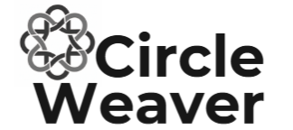

Architecture walkthrough
How the new React interface talks to the Java app on S07, what is already on the branch, and how that work reaches the server.
1. Where we are
spring3. The Java app on S07 already does the work.
This is how a screen gets data, and how that React app reaches the server.
Jeanne and I have been in the repo the most so far. Anyone on the team can open a branch and work in the code for the frontend.
- Jeanne has been working on React screen components.
- Thea is working on backend wiring, login, the meeting API, and the UX hookup.
- Kyle covers QA, docs, and presentation support.
- Dante covers facilitation, decisions, and repo workflow.
- Susan covers branding and the stakeholder expectation pitch.
2. Big picture
CircleWeaver architecture
%%{init: {"flowchart": {"nodeSpacing": 18, "rankSpacing": 22, "padding": 8, "htmlLabels": true}, "themeVariables": {"fontSize": "14px"}}}%%
flowchart TB
Browser[Browser]
Legacy["Legacy JSP still on S07"]
React["spring3 React + Vite"]
Tomcat["Tomcat runs the WAR"]
Spring["Spring MVC routes /t/*"]
Files["Workspace files in /opt/weaver_sites"]
SSOFI["SSOFI on S06, then a session cookie"]
Mongo["MongoDB for mail"]
Browser --> Legacy
Browser --> React
Legacy --> Tomcat
React -->|"JSON"| Tomcat
Tomcat --> Spring
Spring --> Files
Browser -.-> SSOFI
SSOFI -.-> Tomcat
Spring -.-> Mongo
/t/ URL is a site, then a workspace, then a page or a JSON file.
Spring sends that request to a controller, and the controller reads the workspace files.
SSOFI checks who you are. MongoDB is for mail.
The meeting we are in right now is that legacy page: fall2026 / development-team / meeting 8562.
- React builds the user interface (Read documentation)
 Vite runs and builds the frontend (Read documentation)
Vite runs and builds the frontend (Read documentation)- Java is the backend programming language (Read documentation)
 Spring MVC receives application requests and routes them to controllers (Read documentation)
Spring MVC receives application requests and routes them to controllers (Read documentation)- Maven builds the Java application into a WAR (Read documentation)
- Tomcat runs the deployed Java web application (Read documentation)
- SSOFI handles user authentication (Read documentation)
 MongoDB supports mail-related functionality (Read documentation)
MongoDB supports mail-related functionality (Read documentation)
Maven builds the WAR. Tomcat runs it. Spring routes the request. React draws the page and talks to that backend.
3. Opening meetings
Loading a meeting list
%%{init: {"flowchart": {"nodeSpacing": 10, "rankSpacing": 14, "padding": 6, "htmlLabels": true}, "themeVariables": {"fontSize": "13px"}}}%%
flowchart TB
Open["1. Browser opens meetings in spring3"]
Ask["2. GET meetingList.json for fall2026 / development-team"]
Cookie["3. Browser sends the S07 session cookie"]
Tomcat["4. Tomcat passes /t/* into Spring MVC"]
Read["5. Meeting controller reads .cog/ProjInfo.xml"]
Show["6. JSON returns and React lists the meetings, including 8562"]
Open --> Ask --> Cookie --> Tomcat --> Read --> Show
GET /weaver/t/fall2026/development-team/meetingList.json
This meeting is site fall2026, workspace development-team, id 8562.
The browser is on MeetingHtml.htm.
meetingList.json is the same workspace, as JSON, which is what spring3 should request.
test-workspace is the smaller sample list.
The page and the meeting record live in different folders.
Tomcat serves the page from /opt/tomcat/webapps/weaver/.
The record is in the site library: /opt/weaver_sites/fall2026/development-team/.cog/ProjInfo.xml.
The sample workspace is the folder next to it, /opt/weaver_sites/fall2026/test-workspace/.cog/ProjInfo.xml.
Spring reads ProjInfo.xml and builds meetingList.json and MeetingHtml.htm for that request.
Those two names are responses. They are not extra files saved beside ProjInfo.xml.
These links need a logged-in session.
Login goes through SSOFI. Weaver checks it, and Tomcat sets a session cookie. Later requests to S07 send that cookie. The Vite dev server is a different origin, so that cookie is not sent from localhost. The built app has to be served on the Weaver origin.
The URL we are aiming for is https://s07.circleweaver.com/weaver/app/#/meetings. Hash routes let React handle its own navigation, so Tomcat does not rewrite frontend paths.
The React change is small. spring3 already has the meetings screens on demo data,
and meetingList.json already returns { meetings: [...] } from ProjInfo.xml.
A branch can save that response for fall2026 / development-team and render it in the list,
including meeting 8562. That is enough to review in a PR.
A live fetch is only a few more lines, and it fails on localhost because the session cookie belongs to s07.circleweaver.com.
It works once the built app is served on S07 under /weaver/app/.
4. What is on the branch
Branch ux-workflow/create--discussion,document,meetings/functions-thea
on theazora/cognoscenti.
| Area | On this branch |
|---|---|
| Meetings | Real screens: my meetings, new meeting, meeting list, meeting room, attendance. Still demo data. The live meeting is still MeetingHtml.htm?id=8562 on the legacy app. |
| Documents | Library, upload, and links in DocumentsPage.tsx. Saved in the browser for the demo. |
| Discussions | /discussions is still PlaceholderPage: “Topics and comment threads from this workspace.” Home cards already link there. |
5. How it ships
From the branch to S07
flowchart LR
Branch["Feature branch"] --> Master["cognoscenti master"]
Master --> Server["Linux server · S07"]
WinSCP["WinSCP"] -.->|"look, don't save"| Server
Actions["GitHub Actions"] --> Vitest["Vitest"]
Actions --> Build["Vite build"]
Vitest --> Master
Build --> Master
The React app arrives because it is merged to cognoscenti master, and that is what the server is deployed from.
GitHub Actions will run Vitest and the Vite build on the pull request before that merge.
A hand upload can be wiped on the next deploy.
Let's try to ask Ted if that's what he means by automation, and any other steps that would be good. He mentions Vite's automated checks and GitHub Actions. He says it is less of a tool issue and more a way to develop software we will learn. Some of the tools don't matter as much as wanting small, testable features, so we don't have to test by hand. That is code that tests other code, including lighter Playwright tests. We should research these more before we settle on a setup.
WinSCP is how we look at S07. Opening a file there opens WinSCP’s editor. The editor can mark the file modified even when you only opened it. If it asks to save, choose No. Looking is fine. Saving from WinSCP is not how this server gets updated.
- App
/opt/tomcat/webapps/weaver/— Tomcat, the JSP pages, and where the React build will go. - Sites
/opt/weaver_sites/— each site, then each workspace, then.cog/ProjInfo.xml. - Users
/opt/weaver_user/— account files, separate from the meetings.
WEB-INF/config.txt is what points the app at the sites folder and the users folder.
It also has the public base URL, https://s07.circleweaver.com/weaver/, and login at https://s06.circleweaver.com/ssofi/.
The rest of that file is server admin settings. Those stay on the server.
Vitest checks the meeting-list mapper before anyone has to click through S07. That workflow is the plan. It is not in the repo yet.
6. Both stay on S07
The legacy JSP pages keep working on the same Tomcat app, /opt/tomcat/webapps/weaver/.
spring2 is the JSP pages. A spring3 folder is already in that app, updated 9/30/2026.
The React build we are aiming for is a separate folder, /weaver/app/, and that folder is still to be added.
Today’s meeting stays at
MeetingHtml.htm?id=8562.
The React build goes under /weaver/app/, and hash routes such as
/weaver/app/#/meetings stay in the browser, so they don’t replace
/weaver/t/... or meetingList.json.
Both use the same S07 session cookie.
What can feel cluttered is having two ways to open the same meeting. Bookmarks and the current nav still land on the JSP. That’s fine while the React screens are still on demo data. We shouldn’t point people at the React app as the normal way in until a screen is actually calling the existing endpoints.
7. Questions I have come across
| Question | Answer |
|---|---|
| Are we replacing Java? | The Java backend stays. We are replacing the screens in front of it. |
| Does React talk to MongoDB? | React talks to the Java backend. MongoDB is the email service the backend uses when we run meetings, for mail such as notices. Meeting records themselves stay in the workspace files. |
| Where are meetings stored? | In the site library, /opt/weaver_sites/, inside the workspace’s .cog/ProjInfo.xml. This meeting is /opt/weaver_sites/fall2026/development-team/.cog/ProjInfo.xml, id 8562. Each meeting is a <meeting> entry in the <meetings> list. meetingList.json is built from that file when the browser asks for it. MongoDB does not hold the meeting. config.txt only points at the library folder. The rest of that file stays on the server. |
| Why SSOFI? | It is the login service. I (Thea) have set up OAuth across a lot of React and Next.js apps, so this flow is familiar. Vite is basically the same. There are just a few extra layers here, between the dev server, the session cookie, and serving the built app on S07. |
| Why not localhost? | After login, Tomcat sets a session cookie for s07.circleweaver.com. The Vite dev server is localhost on another origin, so the browser does not send that cookie with requests from the dev server to S07. Logged-in calls such as meetingList.json work once the built app is served on that same host, at /weaver/app/. |
| Do we need a new API? | We are reusing the endpoints that already exist. We may integrate more APIs later, such as Weaver Scribe. That part is still to be decided. |
| Who builds discussions? | Thea will open a branch for it and run a PR for review of the prototype workflow. The screen is still a placeholder at the moment. |
These are the ones I have run into so far. Anyone else's questions are welcome.
8. Questions to be ready for
These are the ones I expect people to ask once we get into the details.
The pieces
| Question | Answer |
|---|---|
| What’s the difference between React and Spring? | React handles what users see and interact with. Spring handles backend requests, application logic, and access to stored information. |
| What exactly does Tomcat do? | Tomcat is the web server and servlet container that runs the deployed Java application and serves its static files. |
| Why do we need Maven? | Maven manages Java dependencies and builds the application into a deployable WAR file. |
Backend and data
| Question | Answer |
|---|---|
| Where are meetings actually stored? | In workspace files under /opt/weaver_sites/, in .cog/ProjInfo.xml. Spring reads that file and builds the JSON when the browser asks for it. |
| Does MongoDB store our meetings? | MongoDB supports mail. Meeting and workspace records stay in the file-based site library. |
| Do we need to build a new API for React? | Not for the first hookup. The backend already has endpoints for listing, reading, and updating meetings. The work is connecting those to React. |
| What happens when someone creates or updates a meeting? | React sends the request to the backend. Spring runs it through the meeting controller, which updates the workspace data. |
| Are all the React screens connected to real data? | Not yet. Most still use demonstration data in the browser. Connecting meetings is one of the first integration milestones. |
Authentication and deployment
| Question | Answer |
|---|---|
| Why can’t we just run everything through localhost? | The login session uses a cookie for the S07 domain. The Vite dev server on localhost is a different origin, so it does not get that session. The plan is to serve React under the existing Weaver app. |
| Are we creating a new login system? | We are reusing SSOFI and the existing Tomcat session. |
| Will the old interface stop working? | The JSP application stays. The React application will be served separately under /weaver/app/. |
| How will we deploy the new frontend? | The React app builds into static files, and those go in the deployed WAR. Changes go through GitHub and the usual deploy, rather than a hand upload. |
| Can we deploy React without rebuilding the Java application? | The current plan puts the React build in the WAR. Deploying it on its own would be a separate setup. |
GitHub and testing
| Question | Answer |
|---|---|
| What is GitHub Actions actually doing? | It runs checks for us. On a pull request it can lint, build the React app, and later run automated tests. That workflow is the plan. It is not in the repo yet. |
| Does GitHub Actions automatically fix errors? | It reports whether checks pass or fail. We still investigate and fix the problems. |
| What is Vitest? | A test runner that fits Vite. We can use it for React components, application logic, and data transformations such as the meeting-list mapper. |
| Why do we need pull requests if everyone has access to the repository? | A pull request is where we review the change, talk through the decision, catch mistakes, and leave a record before it merges to the main branch. |
| Can someone contribute without knowing React? | Yes. Reviewing changes, testing a branch, reporting bugs, writing docs, QA, and pull request review are all part of the work. |
Functionality and UX
| Question | Answer |
|---|---|
| What happens to the Discussions section? | It is still a placeholder. I am planning an initial prototype on a separate feature branch so the team and UX can review the direction. |
| What about meetings that stay running? | We need to agree on the behavior with UX and look at what the backend already does. An explicit End Meeting action is one option. We should settle the workflow before building it. |
| What about Weaver Scribe and AI transcription? | The current screen is a demonstration. Transcription and summarization are not hooked up. Privacy, cost, and what stakeholders need come before picking a provider. |
| What happens to features that are not in the current UX designs? | We should compare the new designs with the existing app so we do not drop something that matters, especially permissions, discussions, collaboration, and meeting workflows. |
9. Questions I'd ask the team
These turn the walkthrough into a conversation.
| Ask | Why it matters |
|---|---|
| What functionality from the original application should we prioritize preserving? | Prevents feature gaps. |
| Who wants to help with automated testing? | Spreads the development work. |
| What should the Discussions experience include? | Gets UX and development aligned. |
| What should happen when a meeting reaches its scheduled end time? | Clarifies the meeting lifecycle. |
| What should be our first fully integrated feature? | Gives us a concrete milestone. |
| What documentation would help the next team most? | Makes the handoff easier. |
Five I want to be especially ready for
| Question | Answer |
|---|---|
| Is the React application actually connected to the backend yet? | Not fully. Authentication and meeting data are the first priorities. |
| Can we break the existing application by working on React? | The work is in spring3 and feature branches. We are not replacing the JSP application. Deploy still goes through the usual process. |
| What is the biggest technical blocker? | Getting the React frontend and the existing backend talking reliably, especially the session cookie and how the build is deployed. |
| What can the rest of the team contribute? | Frontend components, UX implementation, testing, documentation, GitHub reviews, automation, and QA. |
| What can we realistically finish before handoff? | A React foundation with real authentication and meeting data, a documented workflow, testing in place, and a clear list of what is still left. |